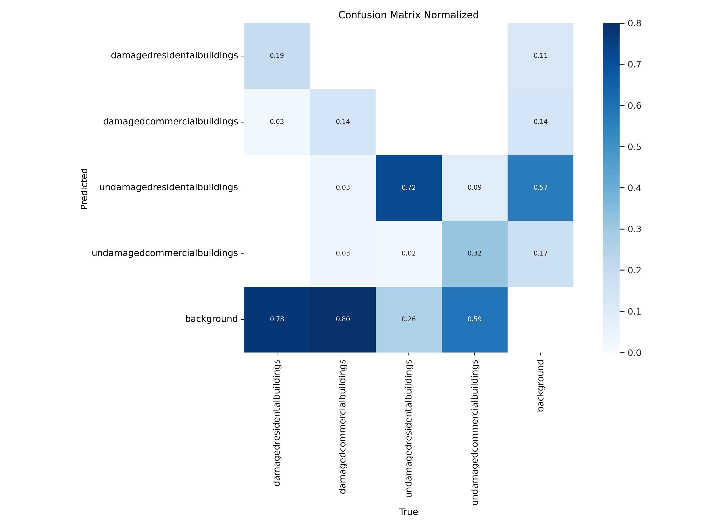
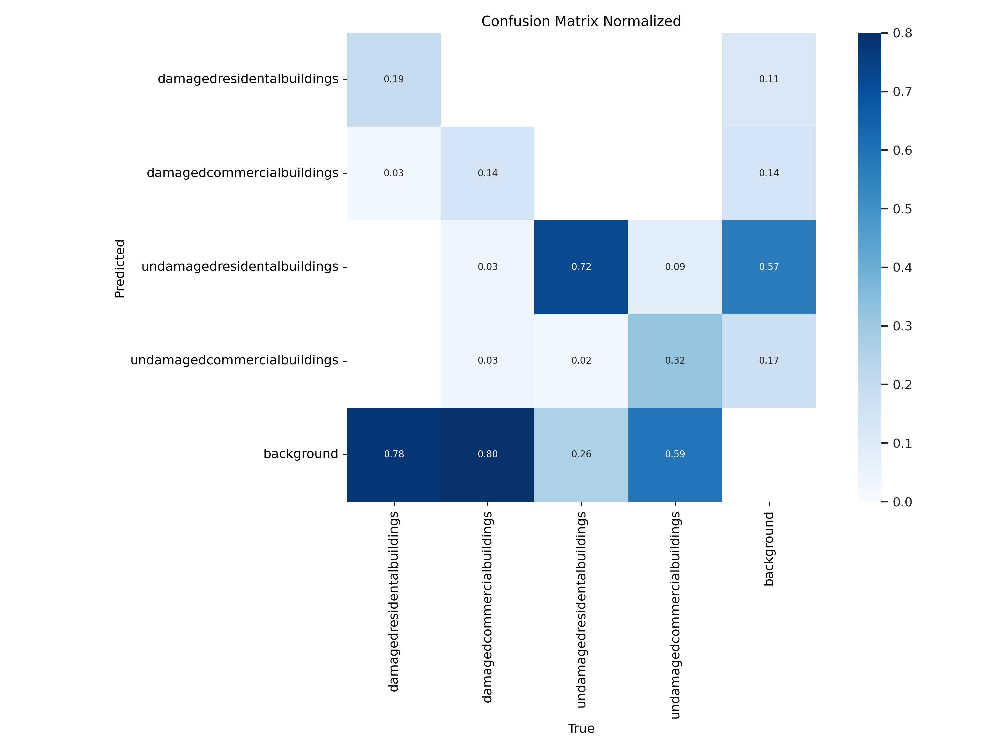

Development of a Machine Learning Model for Tropical Storm Damage Detection on Coastal Infrastructure
Objective
The primary goal of this project was to design and implement a machine learning model capable of identifying and categorizing coastal infrastructure, specifically residential and commercial buildings, into four distinct categories based on their damage state following natural calamities such as hurricanes and cyclones. The focus was on analyzing structures pre- and post-Hurricane Maria, a devastating cyclone that occurred in 2017, to assess the extent of damage inflicted.
Dataset Description
To achieve the project's objectives, high-resolution panchromatic satellite imagery provided by Maxar GeoEye-1 (optical) served as the foundational dataset. This mandatory dataset included images captured before and after Hurricane Maria's impact, enabling a comparative analysis of the infrastructure's condition. The dataset's high resolution was crucial for the detailed identification and classification of the targeted structures.
Methodology
The project was operationalized on a Google Cloud Virtual Machine (VM) Instance equipped with 16 CPU cores and 128GB of RAM, running a Linux-based OS. This robust computing environment was essential for handling the computational demands of processing high-resolution satellite images and executing the machine learning algorithms. Throughout the project, command-line tools in the Linux terminal were utilized for various tasks, including file management (creation, editing, zipping, and unzipping) and dataset manipulation, without relying on a graphical user interface (GUI). This approach necessitated the use of the nano text editor for coding and script modifications. The development process involved training a machine learning model to recognize and distinguish between the four predefined categories of coastal infrastructure: Undamaged residential building Damaged residential building Undamaged commercial building Damaged commercial building
Results
The model's performance was evaluated using the mean Average Precision (mAP) metric, a standard measure for assessing the accuracy of object detection models. A final mAP score of 0.38 was achieved. Although this score reflects a moderate level of accuracy in the model's ability to detect and classify the target structures accurately, it is noteworthy that the constrained time frame for the challenge limited further optimization and potential improvements in model performance.
 

Code Implementation
This section describes the key components of our project's codebase, detailing the purpose and functionality of each script.
DataChallenge.py
Covers various preprocessing steps such as loading geotiff images, visualizing different bands, generating image tiles, and converting these tiles into JPEG format for easier processing.
# Supress Warnings
import warnings
warnings.filterwarnings('ignore')
# GeoTiff Images
import rasterio
from osgeo import gdal
# Visualisation
from matplotlib import pyplot as plt
import matplotlib.image as img
from matplotlib.pyplot import figure
from PIL import Image
# Model Building
import ultralytics
from ultralytics import YOLO
import labelme2yolo
# Others
import os
import shutil
import zipfile
pre_event_image = 'DataChallenge/Pre_Event_San_Juan.tif'
post_event_image = 'DataChallenge/Post_Event_San_Juan.tif'
# Open the geotiff file
def load_and_visualize(image_path):
with rasterio.open(image_path) as src:
# read the red, green and blue bands
red = src.read(1)
green = src.read(2)
blue = src.read(3)
# Plot the bands
fig, (ax1, ax2, ax3) = plt.subplots(1, 3, figsize=(20, 5))
ax1.imshow(red,cmap='Reds')
ax1.set_title('Red Band')
ax2.imshow(green, cmap='Greens')
ax2.set_title('Green Band')
ax3.imshow(blue, cmap='Blues')
ax3.set_title('Blue Band')
plt.show()
load_and_visualize(pre_event_image)
load_and_visualize(post_event_image)
def generate_tiles(input_file, output_dir,grid_x,grid_y):
ds = gdal.Open(input_file)
# Get image size and number of bands
width = ds.RasterXSize
height = ds.RasterYSize
num_bands = ds.RasterCount
# Calculate number of tiles in each dimension
num_tiles_x = (width // grid_x)
num_tiles_y = (height // grid_y)
print(f"Total number of tiles: {num_tiles_x * num_tiles_y}")
# Create output directory if it doesn't exist
os.makedirs(output_dir, exist_ok=True)
# Iterate over each tile and save as a separate TIFF image
for i in range(num_tiles_x):
for j in range(num_tiles_y):
x_offset = i * grid_x
y_offset = j * grid_y
tile_width = min(grid_x, width - x_offset)
tile_height = min(grid_y, height - y_offset)
tile = []
for band in range(1, num_bands + 1):
tile_data = ds.GetRasterBand(band).ReadAsArray(x_offset, y_offset, tile_width, tile_height)
tile.append(tile_data)
# Create output filename
output_file = os.path.join(output_dir, f"tile_{i}_{j}.tif")
# Create an output TIFF file with same CRS and band values range
driver = gdal.GetDriverByName("GTiff")
options = ['COMPRESS=DEFLATE', 'PREDICTOR=2', 'TILED=YES']
out_ds = driver.Create(output_file, tile_width, tile_height, num_bands,
ds.GetRasterBand(1).DataType, options=options)
# out_ds = driver.Create(output_file, tile_width, tile_height, num_bands, ds.GetRasterBand(1).DataType)
# Set the geotransform
geotransform = list(ds.GetGeoTransform())
geotransform[0] = geotransform[0] + x_offset * geotransform[1]
geotransform[3] = geotransform[3] + y_offset * geotransform[5]
out_ds.SetGeoTransform(tuple(geotransform))
# Set the projection
out_ds.SetProjection(ds.GetProjection())
# Write each band to the output file
for band in range(1, num_bands + 1):
out_band = out_ds.GetRasterBand(band)
out_band.WriteArray(tile[band - 1])
# Close the output file
out_ds = None
print("Tiles generation completed.")
input_file = "/Pre_Event_San_Juan.tif"
output_dir = "/Pre_Event_Grids_In_TIFF"
grid_x = 512
grid_y = 512
generate_tiles(input_file, output_dir,grid_x,grid_y)
input_file = "/Post_Event_San_Juan.tif"
output_dir = "/Post_Event_Grids_In_TIFF"
grid_x = 512
grid_y = 512
generate_tiles(input_file, output_dir,grid_x,grid_y)
def convert_tiff_to_jpeg(input_dir,output_dir):
# check if output_dir exists, if not create it
if not os.path.exists(output_dir):
os.makedirs(output_dir)
for filename in os.listdir(input_dir):
# check if file is an image (ends with .tif)
if filename.endswith('.tif'):
img = Image.open(os.path.join(input_dir, filename))
# check if image is RGB mode, if not convert it
if img.mode != 'RGB':
img = img.convert('RGB')
# create new filename, replace .tif with .jpg
output_filename = os.path.splitext(filename)[0] + '.jpg'
# save the image in JPEG format
img.save(os.path.join(output_dir, output_filename), 'JPEG')
print("Conversion from TIFF to JPEG completed.")
# specify directory
input_dir = "/Pre_Event_Grids_In_TIFF"
output_dir = "/Pre_Event_Grids_In_JPEG"
convert_tiff_to_jpeg(input_dir,output_dir)
input_dir = "/Post_Event_Grids_In_TIFF"
output_dir = "/Post_Event_Grids_In_JPEG"
convert_tiff_to_jpeg(input_dir,output_dir)
def rename_files(directory_path):
# Define the directory path where your files are located
directory_path = directory_path
# Get a list of all files in the directory
files = os.listdir(directory_path)
# Define a prefix for the new file names
# Change the prefix as per requirement
prefix = "Post_Event_" #Wrote another code to rename also the Pre_Event
# Start the numbering from 1
number = 0
# Loop through each file in the directory
for filename in files:
# Check if the item is a file (not a directory)
if os.path.isfile(os.path.join(directory_path, filename)):
# Get the file extension
file_extension = os.path.splitext(filename)[1]
# Create the new file name with leading zeros
new_filename = f"{prefix}{number:03}{file_extension}"
# Construct the full path to the original and new files
old_filepath = os.path.join(directory_path, filename)
new_filepath = os.path.join(directory_path, new_filename)
# Rename the file
os.rename(old_filepath, new_filepath)
# Increment the number for the next file
number += 1
print("Files renamed successfully.")
output_dir = "/Post_Event_Grids_In_JPEG"
rename_files(output_dir)
Rename.py
A utility script designed to rename image files systematically. It's used to prepare our dataset by giving consistent naming conventions to our pre-event satellite images.
import os
def rename_files(directory_path):
# Define the directory path where your files are located
directory_path = directory_path
# Get a list of all files in the directory
files = os.listdir(directory_path)
# Define a prefix for the new file names
# Change the prefix as per requirement
prefix = "Pre_Event_"
# Start the numbering from 1
number = 0
# Loop through each file in the directory
for filename in files:
# Check if the item is a file (not a directory)
if os.path.isfile(os.path.join(directory_path, filename)):
# Get the file extension
file_extension = os.path.splitext(filename)[1]
# Create the new file name with leading zeros
new_filename = f"{prefix}{number:03}{file_extension}"
# Construct the full path to the original and new files
old_filepath = os.path.join(directory_path, filename)
new_filepath = os.path.join(directory_path, new_filename)
# Rename the file
os.rename(old_filepath, new_filepath)
# Increment the number for the next file
number += 1
print("Files renamed successfully.")
output_dir = "/Pre_Event_Grids_In_JPEG"
rename_files(output_dir)
Image Labeling Process
Following the preparation and analysis of satellite images through various processing steps as outlined in DataChallenge.py, the next crucial step involved meticulously labeling the images to train our machine learning model effectively. This process was essential for distinguishing between damaged and undamaged residential and commercial buildings in the aftermath of Hurricane Maria.
Labeling was accomplished using Labelme with the Generated_Tiles. High-resolution satellite images were annotated to identify and categorize structures based on their observed damage level, utilizing criteria established at the onset of this project. The labeled dataset served as the foundational training material for the machine learning model, enabling it to learn and predict damage assessments with the provided satellite imagery.
Preparing Annotated Data for Training
After completing the manual labeling of images, the annotated data was uploaded for further processing. The next step involved converting the annotations from JSON format, produced by LabelMe, into a format compatible with our YOLO-based model training pipeline. This conversion was facilitated by labelme2yolo, a utility designed to transform LabelMe annotations into the YOLO (You Only Look Once) format.
The conversion process is crucial as it translates the detailed annotations into a form that specifies bounding box coordinates and class labels in a way that the YOLO model can understand. This step ensures that the model training process can utilize the annotated data effectively, focusing on learning the visual characteristics that distinguish between the different classes of infrastructure damage.
Using labelme2yolo streamlined the preparation of our dataset, making it ready for the training phase. This efficient preparation allowed us to focus on model training and optimization, setting the stage for the development of a robust machine learning model capable of detecting damaged and undamaged coastal infrastructure post-natural calamities.
Creating the YOLO Dataset
With the annotated data converted into YOLO format, the final preparatory step before training the model was to organize this data into a structured dataset. This was achieved using the "Dataset.py" script. The script's primary function was to compile the annotations and corresponding images into a coherent dataset that aligns with the requirements of the YOLO training process.
"Dataset.py" automated the process of linking annotations with their respective images, creating a clear, structured dataset that includes paths to images, bounding box coordinates, and class labels. This structured approach ensures that the model is trained on accurately labeled data, enhancing its ability to learn and predict the specified categories effectively.
The creation of a well-organized YOLO dataset is crucial for efficient model training, as it directly influences the model's learning accuracy and performance. By meticulously preparing the dataset with "Dataset.py", we ensured that our machine learning model had a solid foundation of data to learn from, setting the stage for successful model training and subsequent evaluation.
Dataset Preparation Overview
Below is an overview of the steps involved in preparing the YOLO dataset:
- Read and compile annotation files and image paths.
- Organize data into training and validation sets.
- Ensure compatibility with YOLO's data structure requirements.
- Output a structured dataset.yaml file containing paths to training and validation data, class names, and other relevant information.
import os
import yaml
# Ορίζουμε τον φάκελο με τα δεδομένα
data_folder = "/Annotated_Data/YOLODataset/"
# Φορτώνουμε τα υπάρχοντα δεδομένα από το YAML αρχείο
existing_dataset_path = os.path.join(data_folder, "dataset.yaml")
# Διαβάζουμε το περιεχόμενο του αρχείου YAML
with open(existing_dataset_path, 'r') as yaml_file:
existing_dataset_content = yaml_file.read()
# Αν το υπάρχον αρχείο δεν είναι κενό, προσπαθούμε να το μετατρέψουμε σε λεξικό
if existing_dataset_content.strip():
existing_dataset = yaml.safe_load(existing_dataset_content)
else:
existing_dataset = {'train': {}, 'val': {}}
# Δημιουργούμε ένα άδειο λεξικό για τα νέα δεδομένα
new_dataset = {'train': {}, 'val': {}}
# Περνάμε από τους φακέλους train και val
for subset in new_dataset.keys():
subset_path = os.path.join(data_folder, subset)
image_text_pairs = {}
# Περνάμε από τα αρχεία σε κάθε υποφάκελο
for root, dirs, files in os.walk(subset_path):
for file in files:
# Αν το αρχείο είναι εικόνα
if file.endswith(".jpg"):
image_path = os.path.join(root, file)
# Δημιουργούμε το αντίστοιχο αρχείο κειμένου
text_path = os.path.join(root, file.replace(".jpg", ".txt"))
# Προσθέτουμε τα δεδομένα στο λεξικό
image_text_pairs[image_path] = text_path
# Προσθέτουμε το λεξικό του υποσυνόλου στον κύριο λεξικό
new_dataset[subset] = image_text_pairs
# Συγχωνεύουμε τα υπάρχοντα δεδομένα με τα νέα
for subset in existing_dataset.keys():
existing_dataset[subset].update(new_dataset[subset])
# Αποθηκεύουμε τα ενημερωμένα δεδομένα στο YAML αρχείο
with open(existing_dataset_path, 'w') as yaml_file:
yaml.dump(existing_dataset, yaml_file, default_flow_style=False)
Optimizing Model Training
To effectively train the machine learning model while mitigating the risk of overfitting, the decision was made to utilize YOLOv8 Nano. This choice was informed by the need for a lightweight model that could still deliver the necessary predictive performance without the extensive computational requirements of larger pre-trained models. YOLOv8 Nano, known for its efficiency and speed, proved to be an optimal choice for this project's specific constraints and objectives.
Training was conducted over 50 epochs with a batch size of 16. This configuration was strategically chosen based on preliminary results which indicated that larger pre-trained models or extending the number of epochs led to overfitting. Overfitting, where the model learns the training data too well, including its noise and outliers, can detrimentally affect its performance on unseen data, reducing its generalizability and effectiveness in real-world applications.
The careful selection of YOLOv8 Nano and training parameters underscores the project's tailored approach to developing a robust, effective machine learning model capable of accurately detecting damaged and undamaged infrastructure in the aftermath of natural calamities.
Custom Training Command
The following command illustrates the training process customization:
# Supress Warnings
import warnings
warnings.filterwarnings('ignore')
# GeoTiff Images
import rasterio
from osgeo import gdal
# Visualisation
from matplotlib import pyplot as plt
import matplotlib.image as img
from matplotlib.pyplot import figure
from PIL import Image
# Model Building
import ultralytics
from ultralytics import YOLO
import labelme2yolo
# Others
import os
import shutil
import zipfile
#Loading the model
model = YOLO('yolov8n.pt')
# Display model information (optional)
model.info()
results = model.train(data='Annotated_Data/YOLODataset/dataset.yaml', epochs=50, imgsz=512,batch=16)
This command specifies using the YOLOv8 Nano model with 50 epochs and a batch size of 16, aiming for a balance between learning efficiency and preventing overfitting.
Evaluating the Model on Submission Images
With the training completed, the next step was to assess the model's ability to generalize to new data. This was accomplished using "Sub.py", which applied the best performing model, saved as best.pt, to a set of submission images. These images, distinct from those used during training, were crucial for evaluating the model's effectiveness in real-world scenarios.
The script "Sub.py" systematically processed each submission image, utilizing the trained model to detect and classify the structures as damaged or undamaged. This step was instrumental in understanding how well the model had learned to identify and distinguish between the various categories of coastal infrastructure damage from the imagery.
The model's predictions were carefully analyzed to gauge its precision, recall, and overall accuracy. By applying the model to unseen images, we could realistically assess its readiness for practical deployment and identify areas where further refinement was needed.
Model Evaluation on Submission Images
The evaluation was initiated with the following command:
# Supress Warnings
import warnings
warnings.filterwarnings('ignore')
# GeoTiff Images
import rasterio
from osgeo import gdal
# Visualisation
from matplotlib import pyplot as plt
import matplotlib.image as img
from matplotlib.pyplot import figure
# Model Building
import ultralytics
from ultralytics import YOLO
import labelme2yolo
import numpy as np
# Others
import os
import shutil
import zipfile
model =YOLO('/best.pt')
decoding_of_predictions = {
0: 'undamagedcommercialbuildings',
1: 'undamagedresidentialbuildings',
2: 'damagedresidentialbuildings',
3: 'damagedcommercialbuildings'
}
directory = '/challenge_1_submission_images'
# Directory to store outputs
results_directory = '/Validation_Data_Results'
if not os.path.exists(results_directory):
os.makedirs(results_directory)
# Loop through each file in the directory
for filename in os.listdir(directory):
# Check if the current object is a file and ends with .jpg
if os.path.isfile(os.path.join(directory, filename)) and filename.lower().endswith('.jpg'):
file_path = os.path.join(directory, filename)
print(file_path)
print("Making a prediction on ", filename)
# Assuming 'model.predict' returns results including bounding boxes in normalized form
results = model.predict(file_path, save=True, iou=0.5, save_txt=True, conf=0.25)
# Iterate through results if model.predict possibly returns multiple detections per image
from PIL import Image
image = Image.open(file_path)
image_width, image_height = image.size
# Placeholder: Replace with your model's prediction method
# This is an example based on your structure, adjust according to your actual model output
results = [{'boxes': {'xyxy': np.array([[0.1, 0.2, 0.3, 0.4]]), 'cls': np.array([0]), 'conf': np.array([0.95])}}]
# Iterate through results if model.predict possibly returns multiple detections per image
for r in results:
# Extract class indices and convert to class names
clss_list = r['boxes']['cls'].tolist()
class_names = [decoding_of_predictions[int(cls_idx)] for cls_idx in clss_list]
# Convert normalized coordinates to absolute pixel values
bounding_boxes = r['boxes']['xyxy'] * np.array([image_width, image_height, image_width, image_height])
confidences = r['boxes']['conf'].tolist()
# Ensure all lists have the same length
if len(bounding_boxes) != len(confidences) or len(bounding_boxes) != len(class_names):
print("Error: Mismatch in number of detected items.")
continue
# Writing predictions to a file
text_file_name = os.path.splitext(filename)[0]
with open(os.path.join(results_directory, f"{text_file_name}.txt"), "w") as file:
for bbox, class_name, confidence in zip(bounding_boxes, class_names, confidences):
left, top, right, bottom = bbox
file.write(f"{class_name} {confidence:.6f} {left:.6f} {top:.6f} {right:.6f} {bottom:.6f}\n")
print("Output files generated successfully.")
Analysis of Validation Results
Upon completing the model's evaluation on the submission images, text files were generated for each image, encapsulating the validation results. These files served as a detailed record of the model's detections, listing the identified categories of infrastructure within each image, alongside their confidence levels and spatial locations.